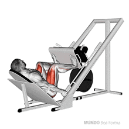
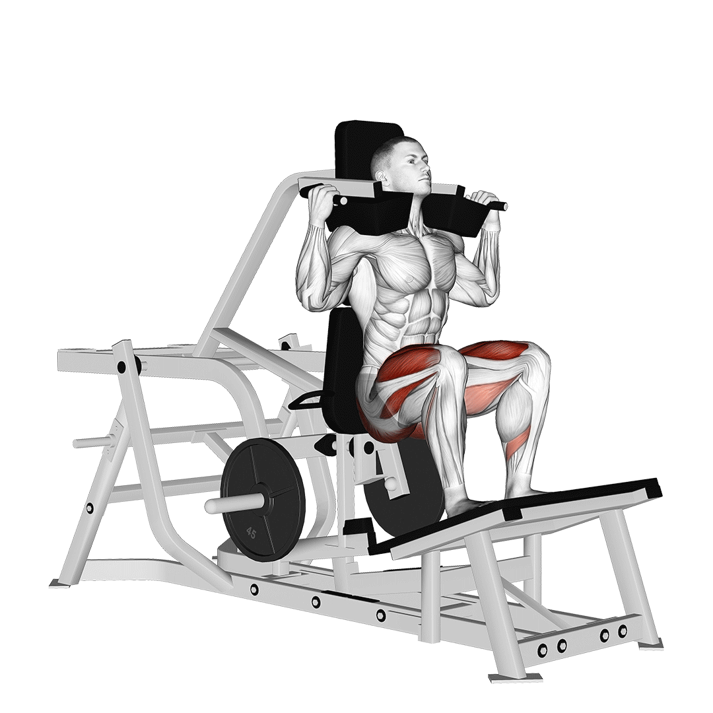
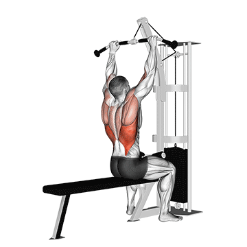
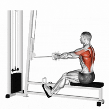
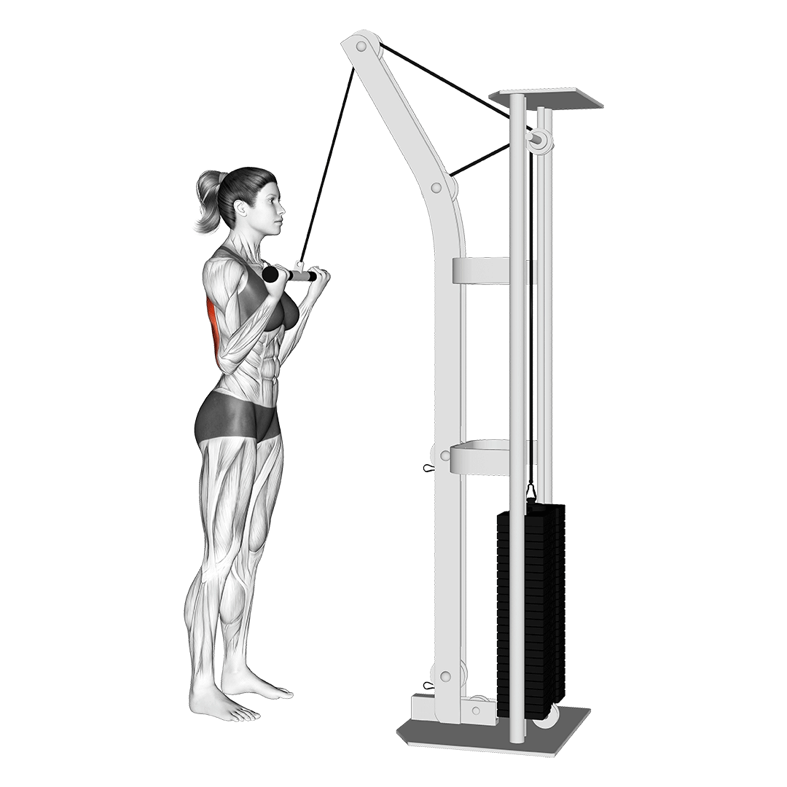
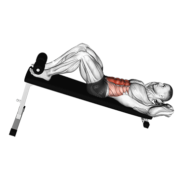

Leg Press
Trabalhe intensamente os músculos das pernas.
- Sente-se no aparelho e posicione os pés na plataforma.
- Empurre a plataforma até estender as pernas (sem travar os joelhos).
- Volte lentamente à posição inicial.

Hack Squat
Intensifique os glúteos e quadríceps com segurança.
- Posicione-se no aparelho com os ombros sob as almofadas.
- Abaixe até os quadris ficarem abaixo dos joelhos.
- Empurre para cima até retornar à posição inicial.

Crucifixo Plano com Halteres
Expanda e fortaleça o peitoral.
- Deite-se em um banco plano segurando halteres.
- Abaixe os braços lateralmente até a altura dos ombros.
- Levante os halteres de volta à posição inicial.

Pulley Frontal
Construa força e definição nos dorsais.
- Sente-se no aparelho e segure a barra com as mãos afastadas.
- Puxe a barra até a linha do peitoral.
- Volte lentamente à posição inicial.

Remada Baixa
Foque nas costas e no core.
- Sente-se no aparelho e segure a barra.
- Puxe a barra em direção ao abdômen.
- Volte lentamente à posição inicial.

Desenvolvimento com Halteres
Fortaleça os ombros e o core.
- Sente-se no banco e segure halteres na altura dos ombros.
- Empurre os halteres para cima até estender os braços.
- Retorne à posição inicial com controle.

Tríceps no Pulley
Defina e fortaleça os tríceps.
- Segure a barra do pulley com as palmas para baixo.
- Empurre a barra até os braços ficarem estendidos.
- Volte à posição inicial sem soltar a tensão.

Abdominal na Polia
Desafie o abdômen com carga controlada.
- Segure a corda conectada à polia alta.
- Ajoelhe-se e puxe a corda em direção ao chão.
- Retorne lentamente à posição inicial.